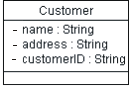
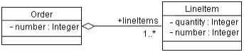

| Рекомендация: Прямое проектирование реляционных баз данных |
 |
|
| Связанные элементы |
|---|
ВведениеВ этой рекомендации приведено описание методов преобразования постоянных классов проектирования модели проекта в таблицы модели данных. Преобразование элементов модели проекта в элементы модели данныхПостоянные классы модели проекта можно преобразовать в таблицы модели данных. Ниже приведена таблица, иллюстрирующая преобразование между элементами модели проекта и модели данных.
Преобразование постоянных классов в таблицыПостоянные классы в модели проекта содержат информацию, которая должна храниться в системе. Теоретически эти классы обладают характеристиками, схожими со свойствами элементов реляционной модели данных. (Например, классы в модели проекта можно до какой-то степени выразить через сущности в реляционной схеме.) При переходе от уточнения к построению цели модели проекта и цели реляционной модели данных расходятся. Это происходит потому, что цель разработки реляционной базы данных - нормирование данных, а цель модели проекта - инкапсулирование постоянно усложняющегося поведения. Из-за расхождения этих двух направлений (данные и поведение) возникает необходимость преобразования элементов одной модели в соответствующие элементы другой модели. В реляционной базе данных, составленной в третьей нормальной форме, каждый ряд таблицы (каждый "кортеж") рассматривается как объект. Столбец таблицы представляет постоянный атрибут или класс. (Помните, что постоянный класс может содержать временные атрибуты.) Поэтому в простом случае, когда нет ассоциаций с другими классами, преобразование выполняется очень легко. Тип данных атрибута соответствует одному из допустимых типов данных из столбцов. Пример Класс Пользователь:  при моделировании с помощью реляционной СУБД (RDBMS) будет преобразован в таблицу с названием Пользователь, состоящую из столбцов ИД пользователя, Имя и Адрес. Ниже приведен пример такой таблицы:
Постоянные атрибуты и ключиДля каждого постоянного атрибута нужно задать вопросы для получения дополнительной информации, на основе которой будет создан постоянный объект в реляционной модели данных. Пример:
Преобразование ассоциаций между постоянными объектами в модель данныхАссоциации между двумя постоянными объектами реализуются в виде внешних ключей к связанным объектам. Внешний ключ - это столбец в таблице, где содержится значение первичного ключа связанного объекта. Пример: Предположим, что существует следующая ассоциация между Заказом и Покупателем:
В результате преобразования в реляционные таблицы создаются таблица Заказ и таблица Покупатель. В таблице Заказ есть столбец с атрибутами и дополнительный столбец ИД покупателя с внешними ключами, которые указывают на первичные ключи, перечисленные в соответствующей строке таблицы Покупатель. Для каждого заказа в столбце ИД покупателя указан идентификатор Покупателя, разместившего данный заказ. Внешние ключи позволяют реляционной СУБД связывать данные между собой. Преобразование ассоциаций типа агрегации в модель данныхАгрегацию также можно моделировать с помощью внешних ключей. Пример: Предположим, что существует следующая ассоциация между Заказом и Каталогом:  В результате преобразования в реляционные таблицы создаются таблица Заказ и таблица Каталог. В таблице Каталог есть столбец с атрибутами и дополнительный столбец ИД заказа с внешними ключами, которые указывают на первичные ключи, перечисленные в соответствующей строке таблицы Заказ. Для каждого товара из Каталога в столбце ИД заказа указан идентификатор заказа, размещенного на данный товар. Внешние ключи позволяют реляционной СУБД связывать данные между собой. Кроме того, необходимо установить ограничение на каскадное удаление, чтобы обеспечить целостность ссылок в модели данных. После этого при удалении Заказа будут также удаляться все ссылки на товары из данного заказа. Моделирование отношений обобщения в модели данныхСтандартная реляционная модель данных напрямую не поддерживает моделирование наследования. Для моделирования наследования можно применять различные стратегии, а именно:
Моделирование ассоциаций многие-ко-многим в модели данныхДля создания ассоциаций многие-ко-многим в реляционном моделировании применяется стандартный метод с использованием связывающих сущностей. Здесь применяется тот же подход: для создания таких ассоциаций применяется таблица пересечений. Пример: Если поставщики могут доставлять различные продукты, и один и тот же продукт могут доставлять разные поставщики, необходимо создать таблицу Поставщик/Продукт. Эта таблица будет содержать только первичные ключи из таблиц Поставщик и Продукт и служить связующим звеном между поставщиками и продуктами, которые они поставляют. В модели объекта нет аналогичной таблицы. Эта таблица используется только для определения ассоциаций в реляционной модели данных. Уточнение модели данныхПосле преобразования классов проектирования в таблицы и отношения модели данных эту модель при необходимости можно уточнить для обеспечения целостности ссылок и настройки доступа к данным через панели или с помощью хранимых процедур. Дополнительная информация приведена в разделе Рекомендация: Модель данных. Прямое проектирование модели данныхБольшинство инструментов проектирования поддерживают создание сценариев из модели данных на языке определения данных (DDL) и/или создание базы данных из модели данных. Прямое проектирование базы данных нужно планировать как часть всего процесса разработки приложения и выполнения задач по интеграции. Время и частота проведения прямого проектирования базы данных зависят от требований проекта. При разработке нового приложения и создании новой базы данных прямое проектирование можно первый раз применить в конце этапа уточнения в процессе реализации стабильной архитектуры. В других случаях прямое проектирование можно первый раз применить при первых итерациях этапа построения. В зависимости от того, какие инструменты проектирования и какие реляционные СУБД применяются в проекте, с помощью прямого проектирования можно создавать те или иные типы элементов модели данных. Обычно можно создавать основные структурные элементы модели данных: таблицы, панели, триггеры и индексы. |

© Copyright IBM Corp. 1987, 2006. Все права защищены.. |